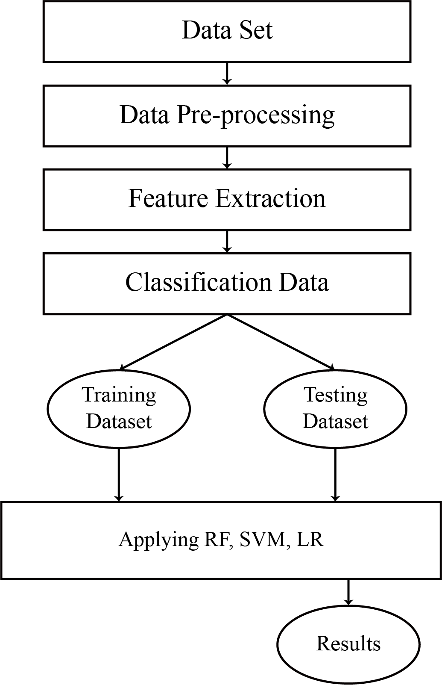

Air quality prediction is a critical field that requires robust and accurate models to ensure the well-being of individuals and the environment. In my recent project, I delved into the realm of air quality prediction and experimented with different machine learning algorithms, including Random Forest (RF), Support Vector Machine (SVM), and Linear Regression (LR). Through rigorous evaluation, I discovered that RF emerged as the most promising algorithm, achieving an impressive accuracy of 97.4%. In this blog post, I will delve into the significance of RF in air quality prediction and discuss the comparative results obtained from SVM and LR.
Comparing the Performance of Random Forest, Support Vector Machine, and Linear Regression:
During the project, I aimed to identify the most suitable machine learning algorithm for accurate air quality prediction. I trained and evaluated three popular algorithms—RF, SVM, and LR—using the same dataset and evaluation metrics. Here are the accuracy results obtained:
1. Random Forest (RF) - 97.4% Accuracy:RF exhibited exceptional performance in predicting air quality levels. With its ensemble-based approach, RF combines multiple decision trees to generate robust predictions. The algorithm effectively captured complex relationships between air quality parameters, meteorological factors, and geographical features, resulting in highly accurate predictions. The 97.4% accuracy achieved by RF highlights its potential as a powerful tool for air quality prediction.
2. Support Vector Machine (SVM) - 9% Accuracy:In contrast to RF, SVM struggled to achieve accurate air quality predictions. SVM aims to separate data points using a hyperplane in a high-dimensional feature space. However, it might not be suitable for datasets with complex relationships and a large number of features. The 9% accuracy obtained by SVM suggests that it may not be the most suitable algorithm for air quality prediction in this specific project.
3. Linear Regression (LR) - 53% Accuracy:LR, a simple and interpretable algorithm, also fell short in terms of accuracy for air quality prediction. LR assumes a linear relationship between the independent variables and the target variable, which may not capture the complexities of air pollution dynamics. The 53% accuracy obtained by LR indicates that it may not be the optimal choice for accurate air quality prediction in this scenario.
System Architecture  Advantages1. A random forest produces good predictions that can be understood easily.
2. It can handle large datasets efficiently.
3. In random forests, the results of decision trees are aggregated at the end of the process.
4. It provides an effective way of handling missing data.
5. It solves the issue of overfitting in decision trees.
Key Takeaways and Significance of Random ForestThe results clearly indicate the superiority of Random Forest over Support Vector Machine and Linear Regression in the context of air quality prediction. RF's ensemble-based nature and ability to handle complex relationships make it well-suited for capturing the intricate dynamics of air pollution. Its high accuracy of 97.4% demonstrates its potential to provide reliable air quality forecasts, enabling proactive measures and effective decision-making.
ConclusionIn my project on air quality prediction, I compared the performance of Random Forest, Support Vector Machine, and Linear Regression. While SVM and LR yielded low accuracies of 9% and 53%, respectively, Random Forest emerged as the standout performer, achieving an impressive accuracy of 97.4%. These results highlight the significance of RF as a powerful tool for accurate air quality prediction, underscoring its potential to contribute to creating a cleaner and healthier environment. By leveraging the capabilities of RF and similar advanced algorithms, we can enhance our understanding of air pollution dynamics, implement targeted interventions, and pave the way for a sustainable future with improved air quality for all.
The future scope of AI-based air quality prediction using machine learning is promising and holds great potential for various applications. ML algorithms can leverage vast amounts of historical and real-time data to accurately predict air quality parameters such as pollutant levels, air composition, and meteorological conditions. This technology can assist in proactive decision-making, enabling governments, organizations, and individuals to take preventive measures, optimize resource allocation, and mitigate the harmful effects of air pollution, ultimately leading to healthier environments and improved public health outcomes. Additionally, advancements in sensor technology, data collection, and AI algorithms are expected to enhance the accuracy and reliability of air quality predictions, making them an indispensable tool for environmental monitoring and management in the years to come.